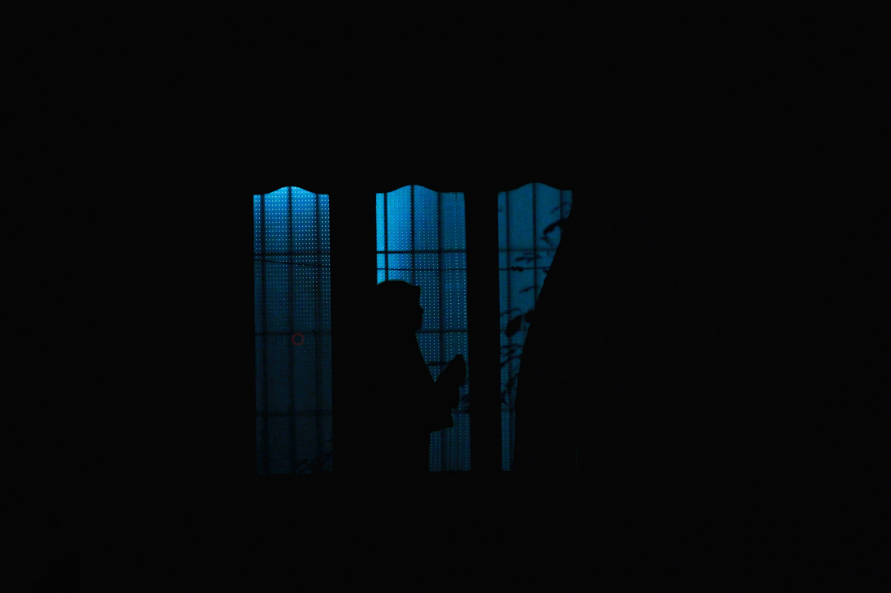
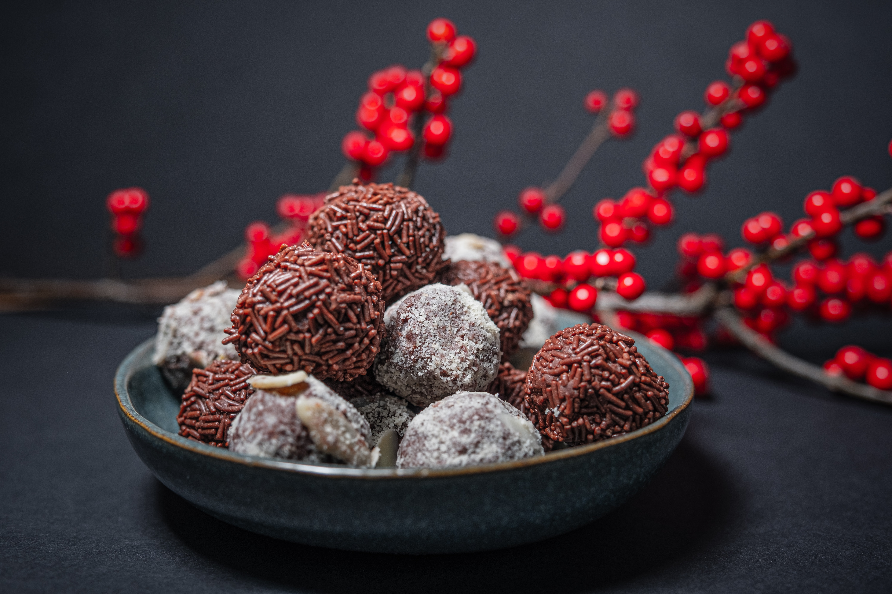

Every religion in the whole world has its own customs, occasions
and traditions. Islam also has its own occasions which makes
muslims unite. Islam preaches us brotherhood, as our
Prophet (PBUH) had taught us that,
Every Muslim is the brother of other Muslim, regardless of
his race, blood and language
. So, in that matter, our Prophet (PBUH) brought many
gifts and blessings from Allah Almighty with him for us. As
occasions are held by dates, in Islam, occasions had also held by
dates, but according to
Islamic Calendar. Every gift has
its own importance, but there are a few gifts which I cannot skip
them:
Islamic Occasions
Overview
NOTE:
The Islamic calendar, also known as the Hijri, Lunar Hijri, Muslim or Arabic calendar, is a lunar calendar consisting of 12 lunar months in a year of 354 or 355 days. It is used to determine the proper days of Islamic holidays and rituals, such as the annual period of fasting and the proper time for the Hajj.
Shab-E-Maraj
The Buraq and Prophet (PBUH)
The Israʾ and Maraj are the two parts of a Night Journey that,
according to Islam, the Islamic prophet Muhammad (PBUH) took
during a single night around the year 621. Within Islam it signifies both a physical and spiritual
journey.
The Quran surah al-Isra contains an outline account, while
greater detail is found in the hadith collections of the reports,
teachings, deeds and sayings of Muhammad (PBUH). In the
accounts of the Israʾ, Muhammad (PBUH) is said to have
traveled
on the back of a winged mule-like white beast, called Buraq, to the farthest mosque
. By tradition this mosque, which
came to represent the physical world, was identified as the
Al-Aqsa Mosque in Jerusalem. At the mosque,
Muhammad (PBUH) is said to have led the other prophets in
prayer. His subsequent ascent into the heavens came to be known as
the Maraj. Muhammad (PBUH) journey and ascent is marked as
one of the most celebrated dates in the
Islamic calendar.
The gift of Prayers
At the end, it's very important to inform you that evey Muslim have to say five prayes a day, these prayers were actually a gift to the Muhammad (PBUH) Ummah. At the very first time, Allah Almighty tells Muhammad (PBUH) that his people must pray 50 times a day, but as Muhammad (PBUH) descends back to Earth, he meets Musa (AS) who tells Muhammad (PBUH) to go back to Allah Almighty and ask for fewer prayers because 50 is too many. Muhammad (PBUH) goes between Musa (AS) and Allah Almighty nine times, until the prayers are reduced to the five daily prayers, which Allah Almighty will reward tenfold. That again, Musa (AS) told Muhammad (PBUH) to ask for even lesser but Muhammad (PBUH) felt ashamed and said that even with lesser prayer times, his followers might not even perform diligently and said he is thankful for the five.
27th Rajab-Ul-MurajjabRamadan
The Fasting
Ramadan is the ninth month of the Islamic calendar, observed by Muslims worldwide as a month of fasting (sawm), prayer, reflection and community. A commemoration of Muhammad's (PBUH) first revelation, the annual observance of Ramadan is regarded as one of the Five Pillars of Islam and lasts twenty-nine to thirty days, from one sighting of the crescent moon to the next. Fasting from sunrise to sunset is fard (obligatory) for all adult Muslims who are not acutely or chronically ill, travelling, elderly, pregnant, breastfeeding, diabetic, or menstruating. The predawn meal is referred to as suhur, and the nightly feast that breaks the fast is called iftar. Although fatwas have been issued declaring that Muslims who live in regions with a midnight sun or polar night should follow the timetable of Mecca, it is common practice to follow the timetable of the closest country in which night can be distinguished from day.
The Spiritual Reward
The spiritual rewards (thawab) of fasting are believed to be multiplied during Ramadan. Accordingly, Muslims refrain not only from food and drink, but also tobacco products, sexual relations, and sinful behavior, devoting themselves instead to salat (prayer), recitation of the Quran, and the performance of charitable deeds as they strive for purity and heightened awareness of Allah Almighty (taqwa).
1st-29/30th RamadanEid-Ul-Fitr
Festival of Breaking the Fast
Eid al-Fitr, also called the Festival of Breaking the Fast
,
is a religious holiday celebrated by Muslims worldwide that
marks the end of the month-long dawn-to-sunset fasting of
Ramadan.
This religious Eid is the first and only day in the month of
Shawwal during which Muslims are not permitted to fast. The date for the start of any
lunar Hijri month varies based on
when the new moon is sighted by local religious authorities, so
the day of celebration varies by locality.
The Eid Prayer
Eid al-Fitr has a particular salat (Islamic prayer) that
consists of two rakats (units) generally performed in an open
field or large hall. It may only be performed in congregation and features
six additional Takbirs (raising of the hands to the ears
while saying Allāhu ʾAkbar, meaning God is the greatest
) in
the Hanafi school of Sunni Islam: three at the start of the first
rakat and three just before rukūʿ in the second rakat. Other Sunni
schools usually have twelve Takbirs, similarly split in groups of
seven and five. In Shia Islam, the salat has six Takbirs in the
first rakat at the end of qira'a, before rukūʿ, and five in the
second. Depending on the juristic opinion of the locality, this
salat is either farḍ (obligatory).
Eid-Ul-Adha

Ibhim's (AS) dream
Eid al-Adha or Eid Qurban, also called the
Festival of the Sacrifice
, is the Islamic holiday
celebrated worldwide each year. It honours the willingness of Ibrahim (AS) to sacrifice
his son as an act of obedience to Allah Almighty's command.
But, before Ibrahim (AS) could sacrifice his son,
Allah Almighty
provided a Ram to sacrifice instead. In commemoration of this
intervention, an animal, usually a sheep, is sacrificed ritually
and divided into three parts.
One share is given to the poor and needy, another is kept for
home, and the third is given to relatives.
The Eid Prayer
The prayer of both
Eid-Ul-Adha
and
Eid-Ul-Fitr
are same.
Schedule
| Occasions | Duration | Date |
|---|---|---|
| Shab-E-Maraj | One night | 27th Rajab-Ul-Murajjab |
| Ramadan | One Islamic Month | 1st-29/30th Ramadan |
| Eid-Ul-Fitr | Three days | 1st-3rd Shawwal |
| Eid-Ul-Adha | Three days | 11th-13th Dul-Hajj |